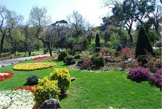
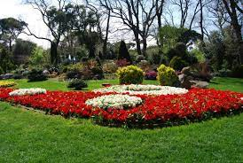

II. Mahmut döneminde koruda av ve gezilerde yapılıyordu. 1940 senesinde İstanbul valisi Lütfü Kırdar tarafından kamulaştırılmıştır.
Küçük Çamlıca Korusuna Toplu taşıma araçlarını kullanarak gidebilirsiniz isterseniz metrobüsde kullanabilirsiniz.
Küçük Çamlıca Korusu, Küçük Çamlıca, Küçük Çamlıca Cd. No:36 D:36, 34696 Üsküdar/İstanbul
Korudaki yaygın ağaçlar fıstıkçamı, karaçam, kızılçam, servi, çınar, gürgen, ıhlamur vb. dir
 